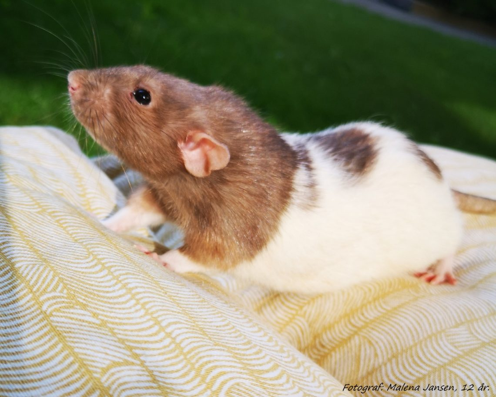

Hetterotter er i gnagerfamilien.
De spiser nesten alt som mennesker spiser. Her er det en liste med mat de ikke tåler.
Hetterotter trenger god plass i buret. De er smarte dyr og trenger derfor å leke ute av buret to timer om dagen. Man må bytte vann og mate de en gang om dagen. Hetterotter lever i 2-3 år. De spiser alt de får, uansett hva det er laget av, så pass på å ikke gi dem for mye plast eller ledninger.
Lyder
Mesteparten av lydene de lager kan vi ikke høre, men de lager også noen lyder som vi hører. Når de er redde, eller det er noe de ikke liker, så lager de en lyd som høres ut som piping. Når de koser seg gnisser de tenner, og da høres det ut som om de spiser noe. De hopper og spretter istedenfor å gå hvis de er veldig glade.
Hetterotter liker ikke skarpe eller brå lyder som for eksempel en plastpose. Buret må være unna elektriske ting som TV og datamaskin fordi det kommer høyfrekvene lyder derfra, og det liker ikke rottene.
Her er det et bilde av en hetterotte:

Det vitenskapelige navnet er rattus rattus.
14/02/25